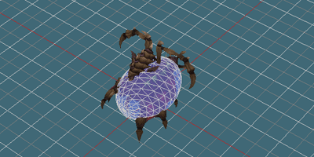
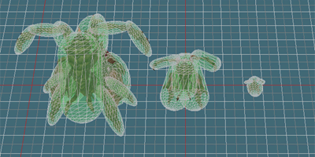

Node: Hit Test Volume
Hit Test Volumes are used for managing selection in StarCraft II. There are two types of Hit Test Volumes, HitTestTight, mostly for drag selection, and HitTestFuzzy, mostly for click selection.
HitTestTight
HitTestTight nodes define the center mass of a model, and are used extensively for in-game drag selection. These are not a special node type created by the SC2ArtTools. Rather, they are standard 3ds Max primitives that the exporter handles specially based on their names.
-
There can be only one per model. It is marked by the node name containing HitTestTight. If more than one valid node is found, one will be selected arbitrarily.
-
Should represent the major mass of the model. Ignore small parts that stick out, like horns, tails, etc.
HitTestFuzzy
HitTestFuzzy nodes are used as an early pass for click selection. There should be one or more per model, and the whole model should be completely enclosed by HitTestFuzzy geometry. Larger models should use more HitTestFuzzys to better match the model's actual form. However, only one will suffice for small models. HitTestFuzzy nodes are not a special node type created by the SC2ArtTools. Rather, they are standard 3ds Max primitives that the exporter handles specially based on their names.
-
There can be as many as appropriate per model. It is marked by the name of the node containing HitTestFuzzy.
-
Should completely cover the model. If any polygons extend outside of Hit Test Fuzzy volumes, they may not be selectable in game.
Common Properties
HitTestTight and HitTestFuzzy share many common constraints and properties.
-
Must be a Standard primitive: Sphere, Box, or Capsule.
-
Do not collapse the primitive shapes or convert to any other shape. The exporter reads their radius, length, width, and height fields.
-
Spheres are best for performance speed. Prefer spheres if possible. Capsules are next best, and boxes are the worst.
-
Parts of shapes below ground are ignored. You may take advantage of this to create half domes, half capsules, and other shapes.
-
Shapes can be rescaled, but only along local axes. Shapes like cylinders can be achieved by increasing the height of a capsule, then scaling it down along a single axis.
-
Negative Scale is not allowed.
-
Shapes can, and should, be linked to to animated parts of the model where applicable.
-
Translate, rotate, and scale can be animated to match a model's animation.
-
Invisible shapes are turned off. Visibility can be animated.